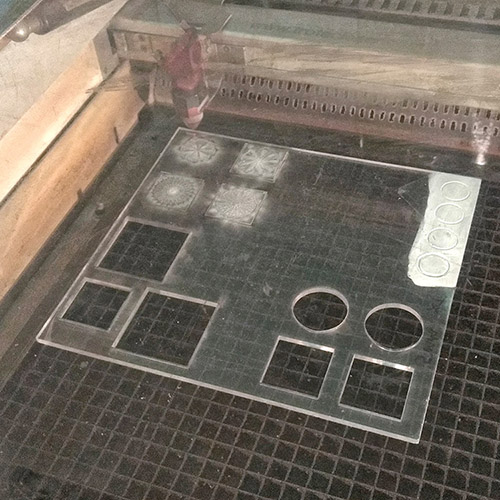
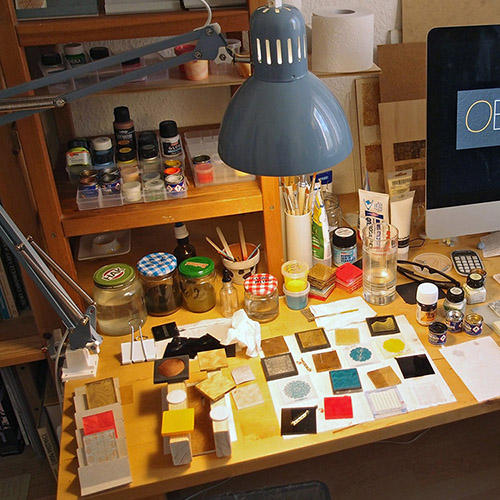
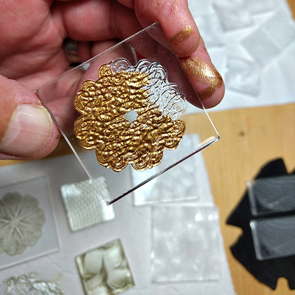
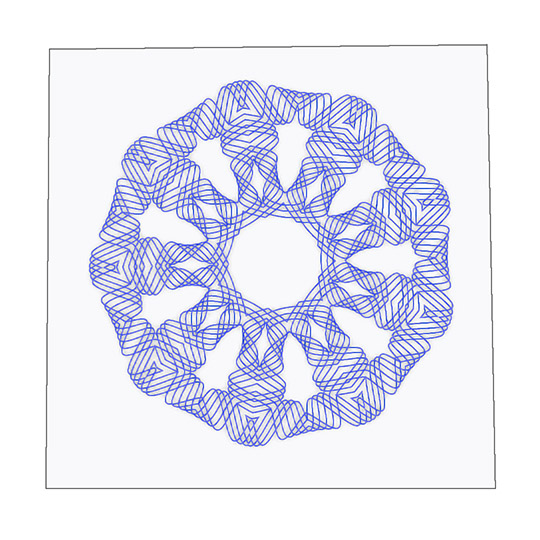
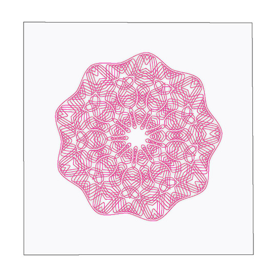
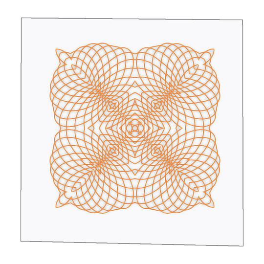

Each piece begins as an original design created on my computer using vector and photographic software. Some designs are derived from historical engravings, others are geometric forms invented from scratch. The artwork is engraved into a small piece of clear acrylic between 4 and 6mm thick. These pieces are back-painted in various colour combinations with up to 5 coats of acrylic and/or enamel paints, often being sanded between each coat. After the final coat, the edges are smoothed and cleaned or painted and the surfaces polished to a high gloss finish. Each piece has optical qualities characteristic of being engraved deeply into the material, rather than simply marked on the surface.



I began by promoting these pieces as “wearable artworks”, although it always seemed an arbitrary classification. The present method of presentation is to inlay the acrylic pieces into lids that fit wooden boxes I make. The lids are designed in such a way that they can easily be hung on a wall to make a small, framed artwork. I can still attach brooch pins to the smaller pieces so they can be worn on clothing, while others use neodymium magnets (very strong, small and decades-durable) to stick to a backing board of any size or material. It is also possible to turn them into accessories such as keyrings, earrings etc. but this would be a special assignment.
I have avoided putting prices on any of the works shown here as the site is meant to show work, rather than sell it. However if you are interested in anything you see, or in knowing more about the process then please feel free to write: obversedesigns@gmail.com


